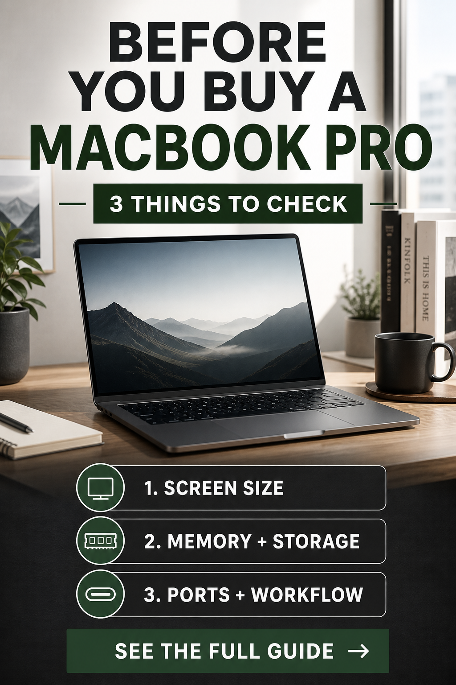

Premium work and creator comparison
Apple 2025 MacBook Pro 14.2-inch
This configuration is worth comparing when screen quality, storage, sustained workflow, and long-term use matter more than choosing the lowest-cost laptop.
- 14.2-inch display class
- 16GB unified memory
- 1TB SSD storage